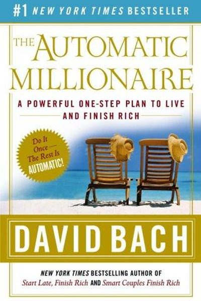

Library › Money & Finance
The Automatic Millionaire — Summary & Key Lessons

A powerful one-step plan to live and finish rich — make wealth automatic and outsmart yourself.
📖 OPEN THE FULL INTERACTIVE BREAKDOWN →🌐 Read it in Hindi, Hinglish, Gujarati, Tamil & 22 more languages — free, with audio.
💡 The Big Idea
David Bach's core discovery: most people never get rich not because they earn too little, but because saving depends on willpower. The Automatic Millionaire system removes willpower entirely: automate your savings (pay yourself first, before bills), automate your bills, and let the system run. His famous example: a modest-income couple who became millionaires by doing almost nothing except automating their finances consistently for decades.
🧠 The 6 Key Lessons
Lesson 1: Pay Yourself First — Automatically
The Richest Couple in America
The one-step plan: arrange for a fixed percentage of your income to move to savings/investments automatically — the moment money hits your account, before bills or spending. Paying yourself first means you never 'forget' to save and never spend the savings first. Automation turns saving from a choice into a default.
📖 Example: Bach's 'richest couple' — a teacher and a janitor — became millionaires by automatically moving a chunk of each paycheck into mutual funds for decades, never trying to time the market. Read the full example →
⚡ Do this: Set up an automatic transfer today: move 10% (or any %) of income to savings on payday, before anything else.
Lesson 2: Automate the Bills Too
The System
The full system automates everything: savings, bills, investments, and a separate 'fun' account. With bills on autopilot, there are no late fees, no stress, and no monthly decision fatigue. The system runs itself — you just check in.
📖 Example: Bach's clients set up separate accounts: bills, savings, everyday spending. Money flows automatically; the couple's financial stress dropped to zero within months. Bach's example: a couple who automated their electricity, phone and insurance bills stopped… Read the full example →
⚡ Do this: Automate your next three recurring bills. Then add one more automatic transfer to investments.
Lesson 3: The Latte Factor: Small Leaks, Big Wealth
The Latte Factor
Small daily spending — lattes, snacks, subscriptions — quietly drains thousands over a year. The Latte Factor isn't about giving up joy; it's about noticing the leaks and redirecting them to your automatic savings. Tiny daily amounts, automated and compounded, become serious money.
📖 Example: Bach's math: ₹200 a day on extras = ₹6,000 a month that could be invested. Over 30 years at 10%, that 'small' daily leak would grow to crores. A daily ₹100 'latte' — or in India, a daily cutting chai and a vada pav — adds up to ₹36,500 a year. Bach's… Read the full example →
⚡ Do this: Track your small daily spends for one week. Pick one leak and redirect its amount to your automatic savings.
Lesson 4: Make It Rain: The Power of Compound Interest
The Latte Factor
Compound interest is the engine: money grows on money, and time multiplies the effect exponentially. Starting early — even with small amounts — beats starting late with large ones. The automatic system's real power is that it lets time do the work without you.
📖 Example: Bach's tables: ₹5,000 a month starting at 25 grows to far more by 60 than ₹10,000 a month starting at 40. The extra decade of compounding is worth more than double the deposit. Bach's favourite illustration: ₹10,000 invested once at age 25 grows to far more… Read the full example →
⚡ Do this: Run your own compound math: what does your monthly automated saving become in 20, 30, 40 years at 10%?
Lesson 5: Protect Yourself: The Emergency Fund
The System
Before heavy investing, build an automatic emergency fund of 3-6 months of expenses. This is the money that keeps life's surprises from becoming debt. It's boring, it's essential, and it should be automated too — a fixed amount each month into a separate account.
📖 Example: The couples Bach studied could survive job loss, car repairs and medical bills without touching investments — because the emergency fund absorbed the shocks. Bach insists on a 'rainy day' fund that is never touched: three to six months of expenses parked in… Read the full example →
⚡ Do this: Set an automatic monthly transfer to a separate emergency account until it holds 3-6 months of expenses.
Lesson 6: Live Rich Now: The Fun Account
The System
Automation shouldn't mean deprivation. Bach's system includes a 'fun account' — an automatic monthly allowance you can spend guilt-free. Knowing your fun money is safe makes the rest of the system sustainable. A system you hate will fail; a system with room to enjoy life will run for decades.
📖 Example: Bach's clients who gave themselves a small automatic 'fun' allowance stayed on the plan far longer than those who cut everything — sustainability beats perfection. His 'fun account' is a monthly automatic transfer into a separate account with one rule —… Read the full example →
⚡ Do this: Add a small automatic 'fun' transfer each month. Spend it guilt-free — the system handles the rest.
✅ 5-Step Action Plan
- Set up automatic pay-yourself-first today.
- Automate your recurring bills.
- Find your Latte Factor leak and redirect it.
- Compute what your automation becomes with compound interest.
- Build an automated emergency fund and a guilt-free fun account.
⚠️ When This Doesn't Work
Bach's 'automate your savings, pay yourself first' is the simplest wealth formula ever — and Eduardo Saverin is the warning that automation has a blind spot: the Facebook co-founder whose stake was automatically diluted from 30% to under 5% while he wasn't paying attention — the opposite of the book's promise. Bach's system automates the saving; it cannot automate the vigilance. The caveat: automation works for the flow of money you understand, and fails for the ownership you neglect. Set your money on autopilot — and keep one eye on the cap table, the contract, and the fine print, forever.
💀 The Graveyard Proves It
👥 Eduardo Saverin — The Co-Founder Who Stayed in New York. Burn: Diluted from 34% toward 0.03%. Read the full case study →
💬 Best Quotes from The Automatic Millionaire
- “The secret to getting rich is to pay yourself first — automatically.”
- “What gets measured gets managed; what gets automated gets done.”
- “It's not about how much you make — it's about how much you keep and grow.”
Interactive version: mark lessons as read, listen in your language, share quote cards.